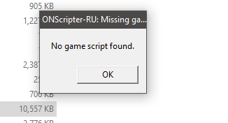

zVortex
2019-01-17 22:35:59
I get no game scripts found whenever I try to launch the game, I tried to re-download the scripts but it didn't work at all
Is there a fix for this?
Is there a fix for this?
- Attachments
-
- 
- Capture-1.PNG (7.44 KiB) Viewed 22787 times